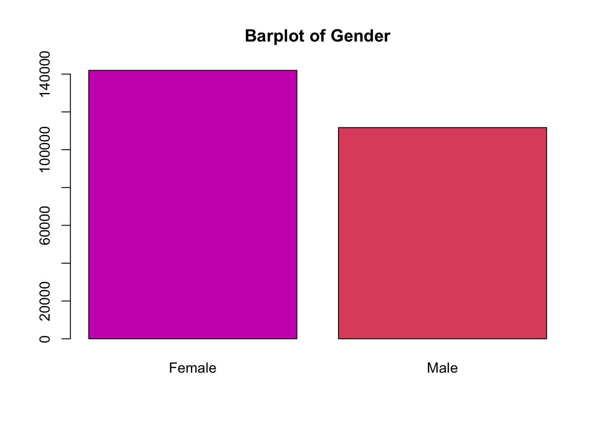
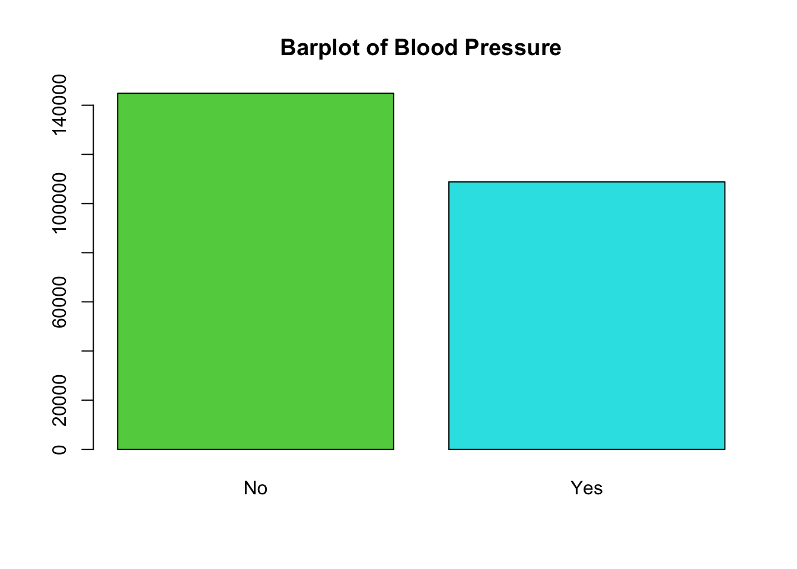
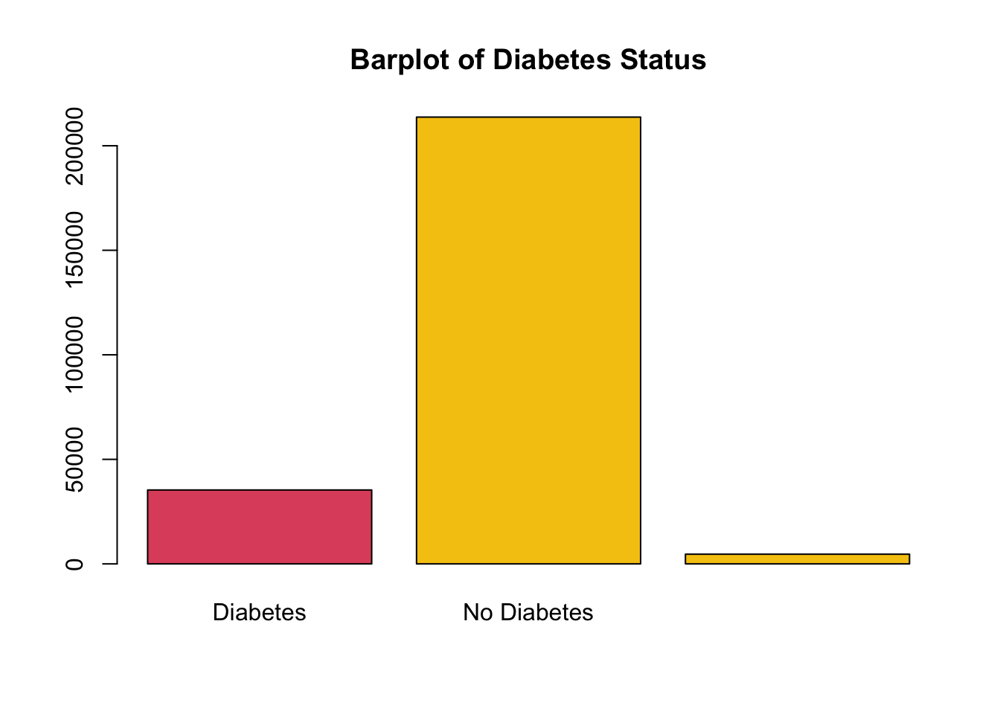

PM566 Analysis
Link to my report: Download
data can be found: https://www.kaggle.com/datasets/alexteboul/heart-disease-health-indicators-dataset
Which health indicators are most likely to contribute to heart disease?
Goal: We are Interested in finding any association between health indicators and heart disease outcome and whether they increase or decrease the chances of developing heart disease. Which variables will be useful in a prediction model for heart disease.
According to the CDC, heart disease is one of the leading causes of death in the United States. We will use a Kaggle dataset of health indicators and heart disease status of more than 200,000 individual across the US.
Our health indicators consist of known risk factors for heart disease as well as potential risk factors. We will see if our analysis confirms the association of the risk factors in our data.
Take a look at the data! The first 100 of 253,680 individual’s health factors as well as heart disease status can be viewed through the interactive table below.
Exploratory Data Analysis
Univariate analysis of the health indicator (below) show us the distribution of individuals with each health indicator.
Notice we can also see the amount of people who have heart disease or a heart attack and those who do not. There are many more people who do not have heart disease than those who do, so we want to keep that in mind when we interpret the each plot.










Here we will focus on just a few of the variables: BMI, Age, and Alcohol use. If you are interested in the analysis, download the report at the top of the page to see how these health indicators compared to others.
Here we can see that on average Individuals who have heart disease are also more likely to have a higher BMI than those who do not. This is an indication that BMI might be a helpful predictor for heart disease.
`stat_bin()` using `bins = 30`. Pick better value with `binwidth`.| HDorAttack | n | BMI_mean |
|---|---|---|
| No | 229787 | 28.26962 |
| Yes | 23893 | 29.46662 |
Age was also an interesting variable to study because you can see (as we would expect) that as people age the proportion of individual who do not have heart disease tends to increase and the proportion of individuals who have heart disease increases.
| Age 18 to 24 | Age 25 to 29 | Age 30 to 34 | Age 35 to 39 | Age 40 to 44 | Age 45 to 49 | Age 50 to 54 | Age 55 to 59 | Age 60 to 64 | Age 65 to 69 | Age 70 to 74 | Age 75 to 79 | Age 80 or older | |
|---|---|---|---|---|---|---|---|---|---|---|---|---|---|
| Heart Disease | 0.9949123 | 0.9928929 | 0.9886721 | 0.9860378 | 0.9782757 | 0.9640749 | 0.9458463 | 0.9269266 | 0.8989893 | 0.8697583 | 0.8322781 | 0.8064456 | 0.7604677 |
| No Heart Disease | 0.0050877 | 0.0071071 | 0.0113279 | 0.0139622 | 0.0217243 | 0.0359251 | 0.0541537 | 0.0730734 | 0.1010107 | 0.1302417 | 0.1677219 | 0.1935544 | 0.2395323 |
Lastly, we will discuss our findings on alcohol use. As with many of these health indicators, we would expect that an unhealthy lifestyle will increase you chances of developing heart disease. It would be expected that heavy alcohol use would also lead to increased chance on heart disease, but this is not what our analysis concluded.
| Alcohol Use | No Alcohol Use | |
|---|---|---|
| Heart Disease | 0.9037482 | 0.9405163 |
| No Heart Disease | 0.0962518 | 0.0594837 |
We can see that the proportion of individuals who had heart disease increases and used alcohol heavily was lower than the proportion of those who had heart disease, but did not use alcohol. This finding in contrary to what we would expect and suggests that heavy alcohol use may contribute to a decrease in heart disease. Although, this is an interesting finding, the sample size for individuals who use alcohol heavily is quite small compared to the sample size for those who do not use alcohol heavily, so we should keep this in consideration when interpreting our results.
Conclusion: An unhealthy lifestyle contributes greatly to the odds of developing heart disease. BMI and age seemed like the best indicators of developing heart disease from the list of health indicators we studied. Although, heavily alcohol use seemed to decrease the odds of developing heart disease, we should be aware of the possibility of confounding due to the small sample size and continue to study the effects of heavy alcohol use on heart disease.